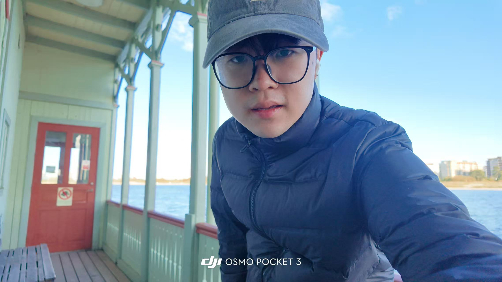

Shengnan Tang
I am a PhD student in Control Science and Engineering at Zhejiang University, where I began my doctoral studies in 2024. I am fortunate to be advised by Prof. Li Chai. My research focuses on time series modeling.
Prior to my PhD, I completed my master's degree at Northeastern University from 2021 to 2024. Before that, I completed my undergraduate studies at Nanjing Tech University from 2017 to 2021.

Education
-
2024 – Present
Zhejiang University Pursuing my PhD degree
-
2021 – 2024
Northeastern University Master's degree
-
2017 – 2021
Nanjing Tech University Undergraduate studies
Publications
- Siwei Lou, Xiaoyan Wu, Dali Gao, Shengnan Tang, Ping Wu, Hanwen Zhang, Li Chai, and Chunjie Yang. “x-DLSSA: Discovering Stationarity via a Deep Learning Lens Toward Unsupervised Monitoring in Steel and Iron Manufacturing Processes.” IEEE Transactions on Industrial Informatics, pp. 1–12, 2026. DOI
- Zhengsong Wang, Shengnan Tang, Ge Guo, Yanqiu Yang, Dakuo He, Le Yang, Meng Han, and Yue Hou. “Adaptive quality control with uncertainty for a pharmaceutical cyber-physical system based on data and knowledge integration.” IEEE Transactions on Industrial Informatics, vol. 20, no. 3, pp. 3339–3350, 2024.